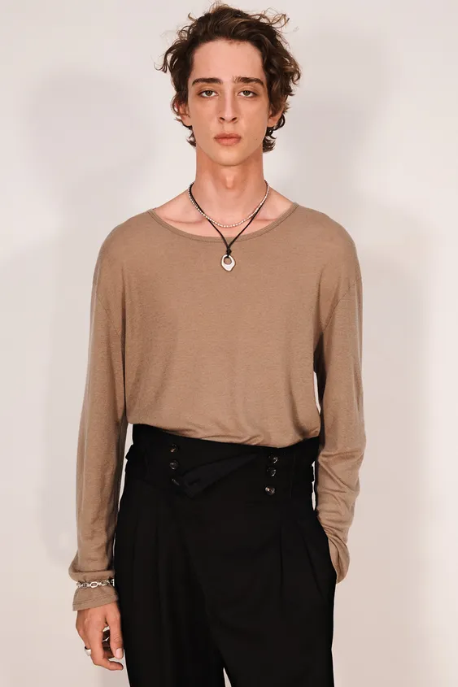
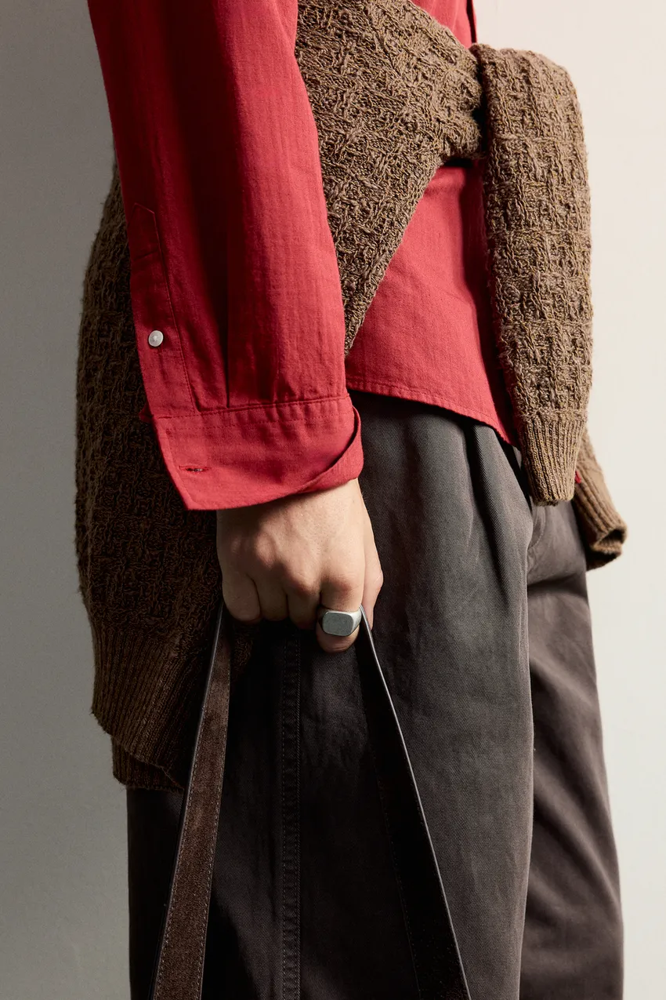

一件素色上衣和一条长裤，加入项链、手表或戒指之后，改变的往往是别人看见细节的位置：项链让领口更醒目，手表让袖口有了收尾，戒指则随着手部动作出现。
男士配饰可以从这些具体关系入手。与其先凑齐一套饰物，更值得观察的是：衣领有没有给项链留下空间，袖子会不会盖住手表，腰带是否让整套穿着多出一道过于明显的横线。合适的配饰，能够让常见衣服呈现出更清楚的个人选择。
领带、方巾、眼镜、帽子、围巾和包，也在参与这种选择。它们有的增加一条线，有的扩大某个部位的体积，有的则改变正式与休闲的感觉。以下从服装与配饰怎样接在一起展开，既讨论日常首饰，也讨论完整穿着中容易被忽略的细节。
项链与领口：同一条链，戴在不同位置

图片来源：ZARA 金属吊坠绳项链。
这套造型里，棕色上衣的领口较宽，一条短的银色链条落在露出的皮肤上，另一条深色绳坠延伸到衣服表面。两条项链之间有清楚的长度差，没有挤在同一处。
短链沿颈部形成弧线，深色细绳则向下汇聚到银色吊坠。上衣宽松、表面光泽较弱，首饰的细线与小面积反光便显得清楚。下身的黑色长裤已有醒目的腰部结构，项链仍集中在领口附近，两个部位各自保留了空间。
如果把上衣换成窄圆领，短链可能被衣服遮住，吊坠也可能卡在领边；换成有图案的 T 恤，吊坠则需要与图案争夺注意。项链是否好看，往往要穿上当天那件衣服才能判断。
几种常见领口，可以这样观察：
- 圆领上衣：看项链是完整露在衣服外，还是只在颈部露出一小段。链条较细、衣服纹理又明显时，细节可能不易看清。
- 解开上端纽扣的衬衫：吊坠可以落在开口内，形成向下的线条。开口大小与链长需要一起调整。
- 高领针织：长链可以直接落在衣料上。如果衣服已经有明显绞花或粗纹理，首饰也需要有足够清楚的轮廓。
照片也说明，叠戴可以很明确：一条短链负责颈部，一条长一些的吊坠负责衣领下方。两条长度相近、吊坠又不断碰在一起时，就容易失去这种层次。
手表与手链：手腕也需要与袖口配合
手表既有功能，也会占据一块稳定的视觉面积。表盘大小、厚度与表带材质，都影响它与衣服的关系。
薄表壳、较细的皮表带，容易顺着衬衫袖口藏入再露出；厚表壳和宽金属表带更有存在感，与宽松外套或较厚衣料放在一起，比例往往更容易看清。表带很紧、表壳顶住袖口时，即使单看手表漂亮，实际穿着也会显得局促。
手链则可以提供不同的细节。细金属链随着手腕移动，会出现断续的亮点；硬质手环的轮廓更稳定；绳编和皮绳的表面通常较少反光，更容易与棉、麻、针织的纹理放在一起。
前面的 ZARA 造型在手腕也加入了银色链状饰物，与颈部的银色细节形成重复。它的面积较小，袖子接近手腕，只有在手部动作中才更清楚地出现。这种安排适合观察“呼应”怎样发生：不同部位重复一点材质，比每个部位都放一个醒目的符号更容易联系起来。
手表与手链可以一起戴，但需要试着抬手、敲键盘、把手插进口袋。金属彼此碰撞，或饰物堆积在袖口，即使照片里有层次，日常也可能一直需要调整。分到两只手上，或只保留其中一件，都是可行的变化。
戒指与耳饰：小面积也可以有明确的形状

图片来源：ZARA 金属印章式戒指。
这张局部照片里，红色衣袖、腰间棕色织物和深色长裤形成大面积的色彩与纹理，银色戒面则集中在手指上的一小块位置。戒面边界明确，表面较平，因而能从周围粗细不同的织物中显现出来。
这种款式常称为印章戒指，辨识点是较宽的戒面。这里可以把它当作一个小的几何形状：它不必与衣服上每一种颜色相配，靠银色与织物的表面差别，就能提供细节。商品页说明采用银镀层，银色外观也不等于整枚戒指由纯银制成。
窄素圈形成的是线，宽戒面形成的是块面。希望手部细节轻一些时，可以先试一枚较窄的戒指；喜欢首饰存在感的人，则可以增加宽度或数量。试戴时握一下手机、提一下包，也能判断戒指的厚度是否妨碍手部活动。
耳饰靠近面部，即使面积不大也容易被看见。小圆环、耳钉与长坠的区别，同样在于轮廓、长度和摆动。配眼镜或戴帽子时，可以把这几件一起看：粗镜框已经提供清楚的脸部线条，耳饰便可以轻一些；如果头发与衣领都比较简单，较醒目的耳饰也有充分的空间。
领带与方巾：正式细节也可以有不同的轻重

图片来源：Aaron Levine × ZARA 羊毛真丝混纺条纹领带。
这张照片同时使用了两种条纹：衬衫的竖条纹细而密，领带的斜条纹较宽、较疏。浅色衬衫铺开较大的面积，深色领带则在胸前形成向下的带状区域，红色条纹使它更容易被看见。
两种图案能够分开辨认，与方向和疏密的差别有关。如果衬衫与领带的条纹宽度、密度和颜色都非常接近，边界可能变得含混；图中则保留了清楚的主次。即使没有外套，领口闭合与领带的垂直方向，也已经让上半身显得经过整理。
领带的材质还会改变这份整理感。平滑、反光较明显的表面容易显得鲜明；能看见织纹、光泽较弱的款式，与粗纹理外套或针织放在一起，会有不同的表面关系。图中商品页注明羊毛与真丝混纺，画面里也能看见较细的织物纹理，不能只按“有领带就很正式”来理解它。
领带宽度需要连同领子和外套翻领观察。较大的领子、宽翻领与极细的领带并置，会形成强烈差别；宽度较接近时，关系通常更平缓。领结则把装饰集中在颈部，不同形态对应不同的穿着意图；参加有着装要求的活动时，先确认活动规则，再做个人化调整。
口袋方巾出现在西装胸袋里，主要增加一小块颜色或边缘。它可以接近衬衫、领带或服装图案中的一种颜色，折法也会改变轮廓：露出较平的一条边，与蓬松展开的形状，装饰程度不同。方巾与领带不必使用完全相同的图案，保留一点差别，反而更容易分别看清。
胸针、领带夹和袖扣属于更局部的细节。胸针的位置可沿翻领调整，领带夹兼顾固定与装饰，袖扣则需要相应的衬衫袖口结构。这些物件可以在实际需要时加入；若外套已有醒目纽扣、胸袋又有方巾，新增金属细节便需要看整个上半身的分布。
腰带、眼镜与围巾：它们会改变整体轮廓
腰带不只是固定裤子。上衣塞进裤腰后，腰带会成为横跨身体的一条线；大扣头或强烈的颜色对比，会让这个位置更加醒目。
例如，黑色上衣与黑色长裤之间放一条浅色腰带，腰部会被清楚地分开；换成接近裤子颜色的腰带，衣服之间的连接就更连续。希望突出高腰剪裁时，可以利用这种横线；希望保留上下身连贯感时，则可以减弱它。
皮带与皮鞋不必精确到同一种色号，但光泽、厚薄与用途值得一起考虑。厚重做旧的宽皮带与细窄、光亮的正式皮鞋，表达的穿着方向有差别；与粗纹理外套、牛仔裤和体积较大的鞋放在一起，关系就更容易理解。
眼镜直接参与面部轮廓。粗框会留下清楚的边界，细金属框更轻，深色镜片又会遮住部分眼神。试戴时，除了看镜框本身，也要连同发型、耳饰和衣领观察：脸旁已经有多少条醒目的线，是否还需要继续增加。
围巾则会改变颈部到肩部的体积。薄丝巾在领口增加颜色和小面积光泽，厚围巾会包住颈部、扩大上身轮廓。帽子与包也有类似作用：帽檐改变头部外形，包的硬挺程度、尺寸与背带位置，会加入身体侧面的轮廓。
围巾的戴法也值得比较。绕在颈部会让衣领附近更紧密；两端直接垂在大衣前面，则留下较长的线。若大衣领子已经很高、很宽，再把厚围巾堆在同一处，头部与肩部之间的空间会被进一步遮住。薄围巾、较松的系法或减少一层，都能改变这种体积。
帽子则可以从整体轮廓判断。棒球帽向前伸出帽檐，针织帽主要改变头顶形状，较宽帽檐会增加横向面积。它们与发型、镜框、耳饰共同出现在脸旁，配衣服一起试，才能看清是否有过多相似的边界。
包、鞋与袜子：让细节延续到全身
包常常是男士配饰中面积最大的一件。轮廓挺括的公文包、柔软托特、双肩包和小斜挎包，会让同一套衣服呈现出不同的用途与节奏。
例如，用衬衫、直筒裤和外套作搭配练习：手提边界明确的包，身体侧面会多出一块稳定形状；换成柔软的大托特，包的下坠与折叠又会带来较随意的轮廓。斜挎包的带子横过胸前，还会改变外套翻领与项链原有的线条。
这也是试包时值得真正背上身的原因。单看包的外形，很难判断它落在腰部还是臀部，背带会不会把衣领拉歪，坐下之后是否还方便。需要携带电脑、相机或其他物品时，容量与背负先解决，造型再从相近用途的款式中选择。
鞋履虽然不全被归入配饰，却会与它们形成直接联系。光面皮鞋可以与皮带、表带的表面呼应；麂皮鞋、帆布包与较少反光的金属，形成的触感与观看感受又不同。颜色无须全部一致，反复出现的一点棕色、深色边缘或金属光泽，就可以把不同部位联系起来。
袜子则处在裤脚与鞋之间。站立时看不见，坐下或走动后可能露出很大一段，因此需要在动作中判断。袜色接近裤子，腿部较连贯；接近鞋子，脚部的色块更完整；明显的亮色或图案，则会把目光带到脚踝附近。
若全身已经有醒目领带、项链和较复杂的外套图案，袜子可以保持简单；若其他部位相当安静，也可以让袜子提供一处小的颜色变化。这是重点的分配，并不意味着每套衣服都需要额外增加装饰。
秋冬还会涉及手套。皮手套的边界通常较清楚，针织手套则显出柔软的织物体积。它们与大衣、包、围巾一起出现时，材质的差别会比单看颜色更明显。钥匙扣、包挂和钱包的露出，也可以放到这一层细节中考虑，不必让每一件随身物品都争取被看见。
香水：让近距离相处舒服
香水参与整体形象的方式是气味。衣服在远处就能看见，香气则与距离、空间和用量紧密相关。
ZARA 对 Vibrant Leather 的介绍，把佛手柑、柠檬等柑橘气味与竹、皮革、广藿香、纸莎草等描述放在一起。这提供了一种既有清新部分、又有木质与皮革部分的试闻方向。ZARA：Vibrant Leather
选香时，可以先试闻，再观察它在自己身上经过一段时间后的变化。见朋友、约会、办公室交谈，都有近距离接触的时刻；少量试用，再结合空间大小和身边人的感受调整，比固定追求浓度或留香时间更实际。
气味与衣服的关系也可以通过同一天的体验来判断。穿一身轻薄的棉麻时，清新的气味可能让感受更连贯，也可以用温暖的香气增加差别。是否喜欢这种组合，需要连同自己的身体感受一起判断，产品上的“男香”“女香”分类不必成为限制。
从见朋友到参加活动，怎样调整
可以拿素色 T 恤、直筒长裤与外套作搭配练习。见朋友时，先加入一块手表或一条领口关系清楚的项链，再背用途合适的包。若包有醒目金属扣，首饰便可以重复其中的一点颜色。整套穿着已经有联系，不必再把所有部位填满。
约会或去餐厅时，可以将衣领、手腕与手指的细节一起看。较小的吊坠、一枚戒指或表带，都可能在面对面交谈中出现。坐下后，项链会不会滑进领口、表壳是否顶住袖子、香气在近距离是否舒服，比静态照片中的整齐更接近实际体验。
参加较正式的活动时，可以换成衬衫、领带与外套，先让领口、翻领和领带的宽度关系成立，再决定是否加入方巾、袖扣或胸针。包、皮带和鞋履接近同一种穿着方向，整体通常更容易连贯；若希望增加变化，可以只在领带图案、戒指或眼镜中保留一处明显差别。
喜欢更强时装感的人，也可以扩大首饰体积、尝试多条项链或较醒目的帽子。仍然需要看这些物件怎样占据身体：是集中在脸旁，还是分布到领口与手腕；是否与服装的宽松程度、图案和光泽形成配合。
最后穿着整套衣服走动、坐下、拿手机。需要不断拉正的项链、卡住袖口的手表，或让手指不舒服的戒指，都值得换一种尺寸或戴法。配饰能够随着身体自在地活动，才更容易进入日常。
资料范围：案例取自 ZARA 美国官网公开商品说明与佩戴图片，核对日期为 2026 年 10 月 25 日。搭配效果为本文对照片的分析；香水部分依据品牌说明，未作实物试香。图片版权归原权利人所有。
留言
由 Disqus 提供。